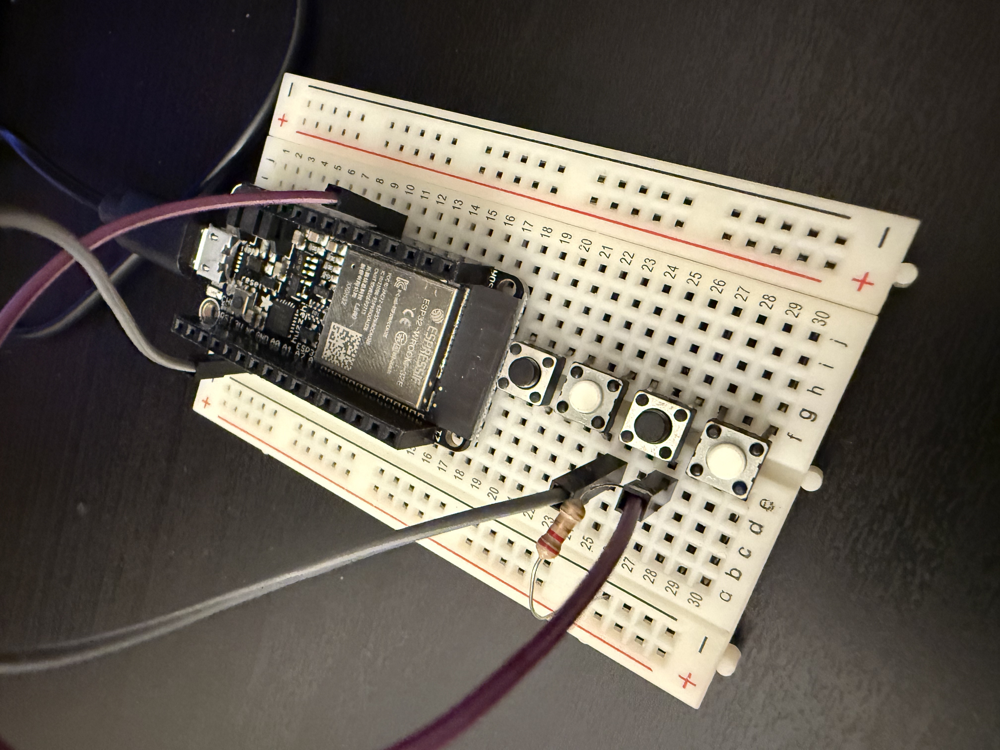
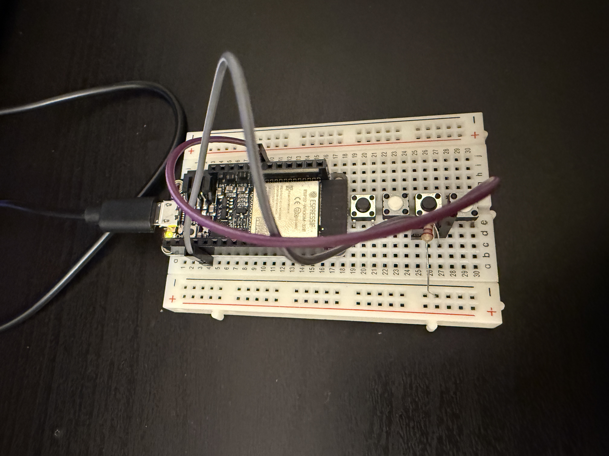

Although only a single button was used, it was designed as a multi-state controller. Different button interactions trigger different visual behaviors, effectively creating multiple control channels from one physical input.
I connected a button to an ESP32 on pin 27 using the internal pull-up resistor. The ESP32 reads the button state and sends 1 or 0 to Processing through serial. In Processing, the button is used to switch between different visual modes instead of just on and off. Each button press changes how the visuals behave.
The button controls multiple visual parameters by switching modes. Even with only one button, the interaction feels rich and dynamic. This project shows how a simple input can create different visual effects.
VIDEO is here  